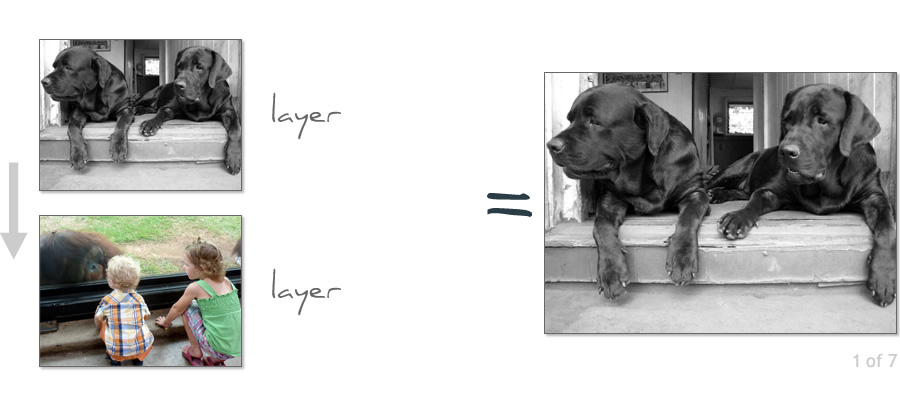
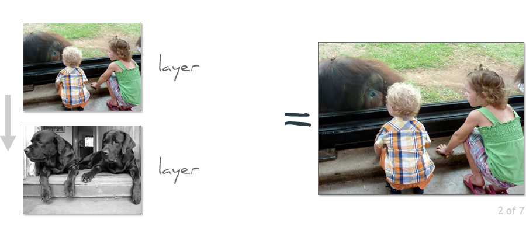
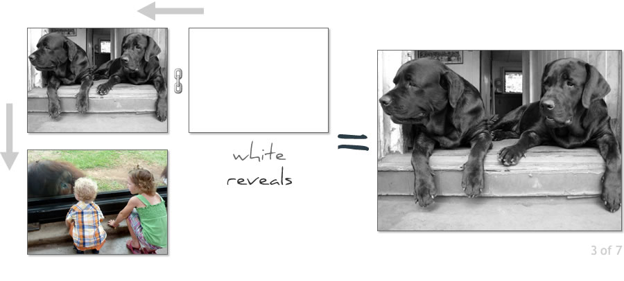
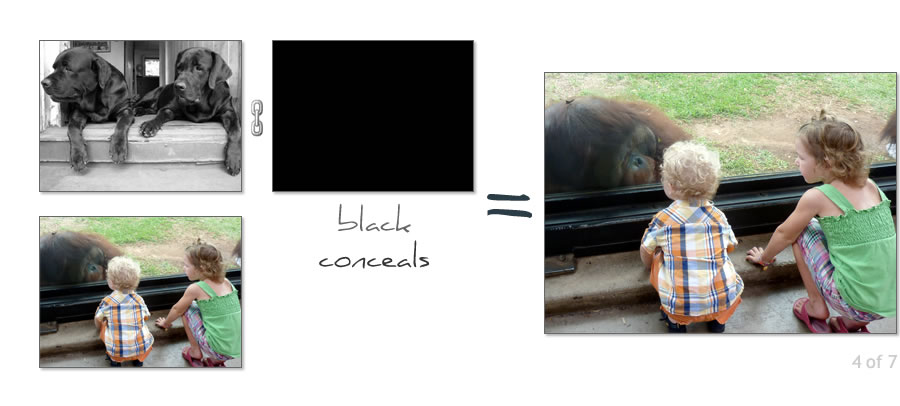
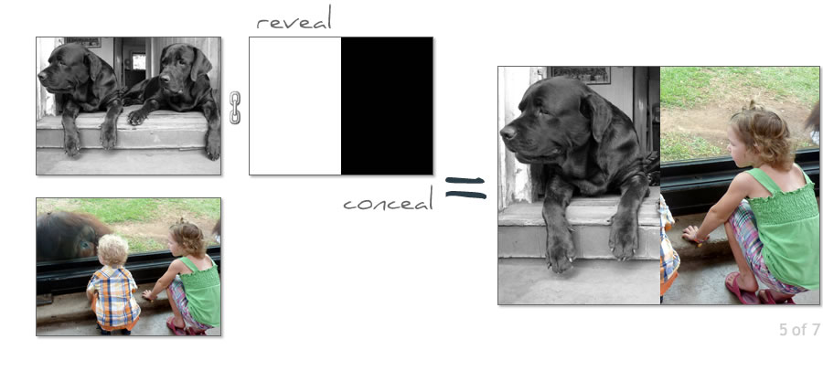
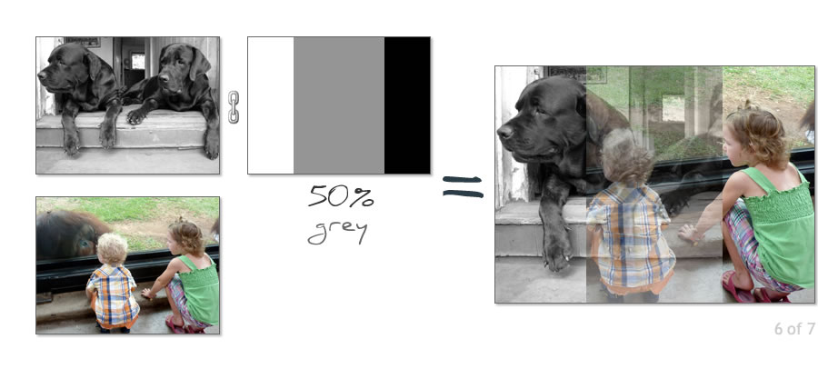
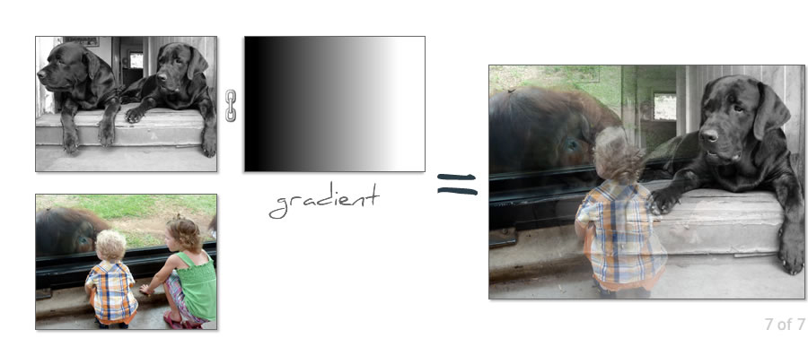

      
So what is masking?
- A mask is a special black & white (grayscale) layer - no colors are allowed
- A mask is typically attached (linked to) a normal content layer
- Masks can also be attached (linked to) Adjustment Layers and smart objects
- Masking is the process of hiding layer pixels, adjustment and filters
- Remember: "White reveals, Black conceals and greys do the in-betweens"
- Knowledge of masking separates the Photoshop novice from the enlightened
- Masking is 'must have' Photoshop skill
- Workshop Follow-up page